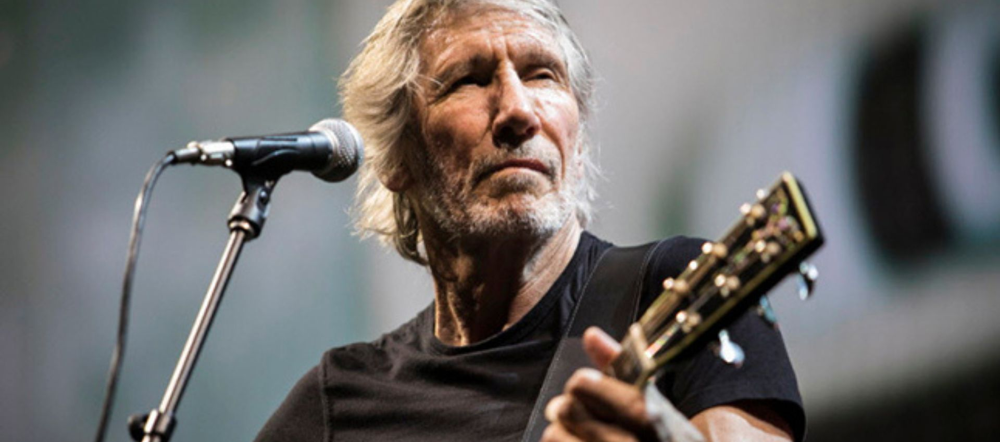

Syd Barrett fue el miembro fundador de Pink Floyd, siendo el principal compositor, cantante y guitarrista principal en sus primeros años. Nació el 6 de enero de 1946 en Cambridge, Inglaterra, y murió el 7 de julio de 2006.
Roger Waters es un bajista, cantante y compositor. Nacido el 6 de septiembre de 1943 en Great Bookham, Surrey, Inglaterra, se unió a Pink Floyd como bajista y co-vocalista, y más tarde se convirtió en el principal compositor de la banda después de la salida de Barrett.
David Gilmour es un guitarrista, cantante y compositor. Nacido el 6 de marzo de 1946 en Cambridge, Inglaterra, se unió a Pink Floyd en 1967 como guitarrista y co-vocalista. Su incorporación permitió a la banda continuar tras la creciente inestabilidad de Barrett.
Nick Mason es un baterista y compositor, y el único miembro de Pink Floyd que ha estado presente en todas las formaciones de la banda. Nació el 27 de enero de 1944 en Birmingham, Inglaterra.
Richard Wright fue un teclista, cantante y compositor. Nacido el 28 de julio de 1943 en Hatch End, Middlesex, Inglaterra, y fallecido el 15 de septiembre de 2008, Wright fue un miembro fundamental de Pink Floyd a lo largo de su historia.